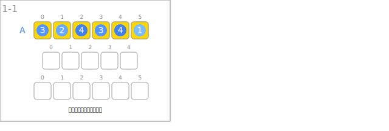
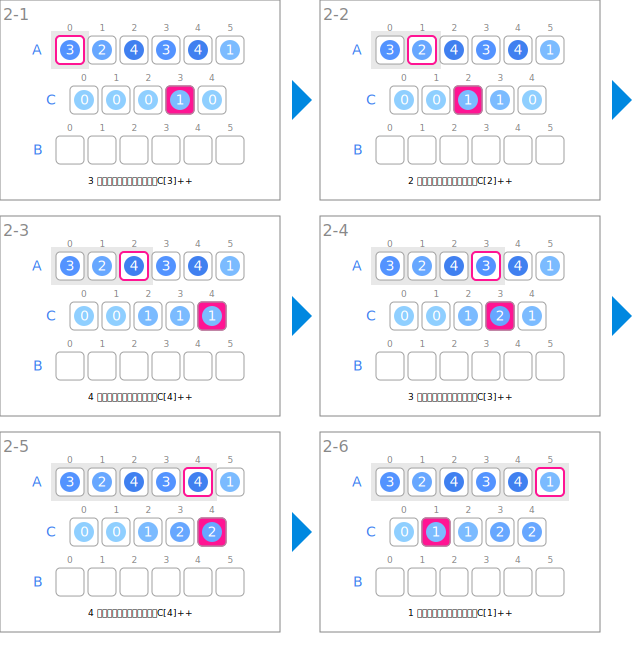
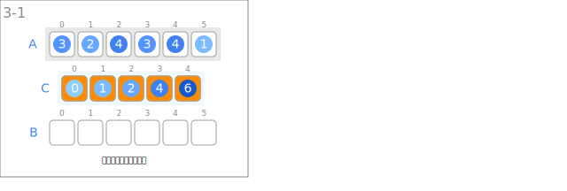
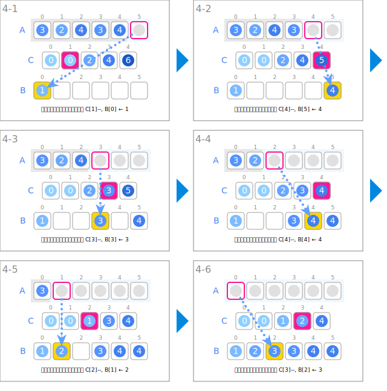
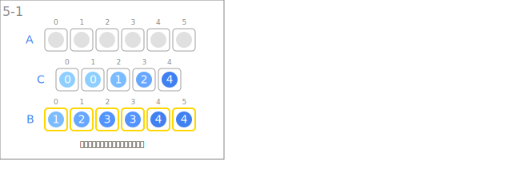

シンボル
| データ | ||
|---|---|---|
 | 入力の整数の列 | A |
| 各整数の出現数の累積和 | C | |
 | 整列された整数の列 | B |
| 入力 | ||
|---|---|---|
 | 整数の列を入力します。 | |
| カウント | ||
 | 整数のカウンタを１増やします。 | C[A[i]]++ |
| カウントの累積和 | ||
 | 累積和を計算します。 | C[i] ← C[i] + C[i-1] |
| 出力配列への移動 | ||
 | 使用する整数のカウンタをひとつ減らします。 | C[A[i]]-- |
 | カウンタの値の位置に、入力の要素をコピーします。 | B[C[A[i]]] ← A[i] |
| 出力 | ||
 | 整列された整数の列を出力します。 | |
アニメーション
入力

カウント

カウントの累積和

出力配列への移動

出力
